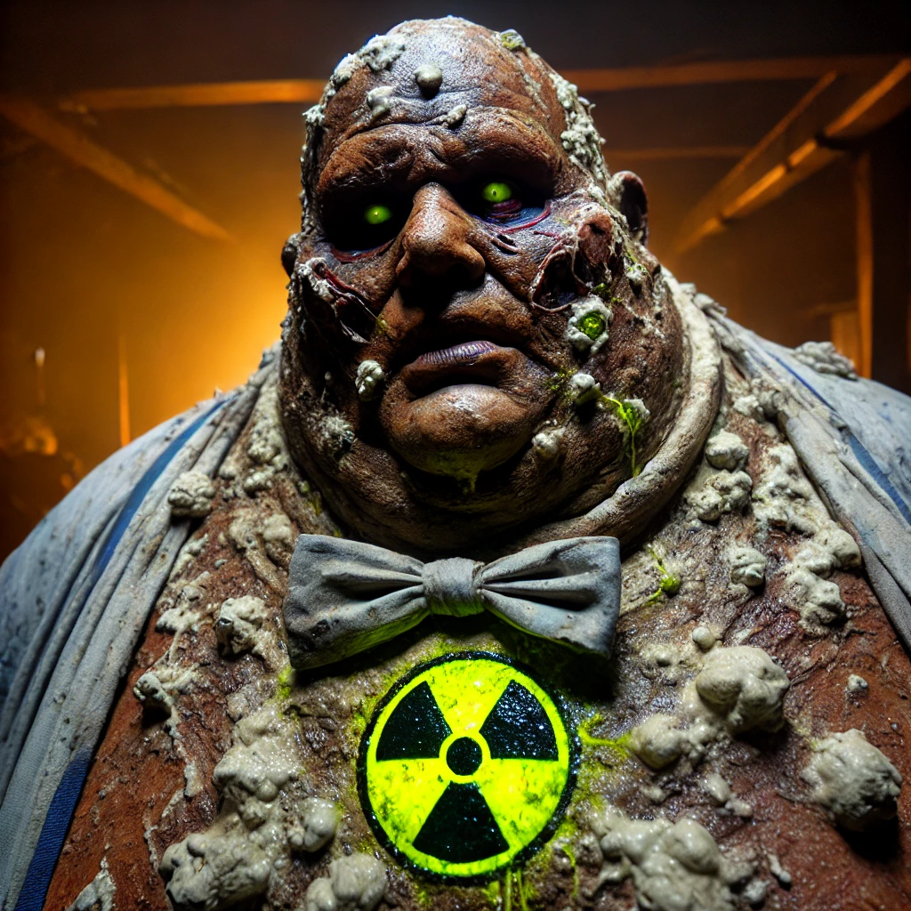
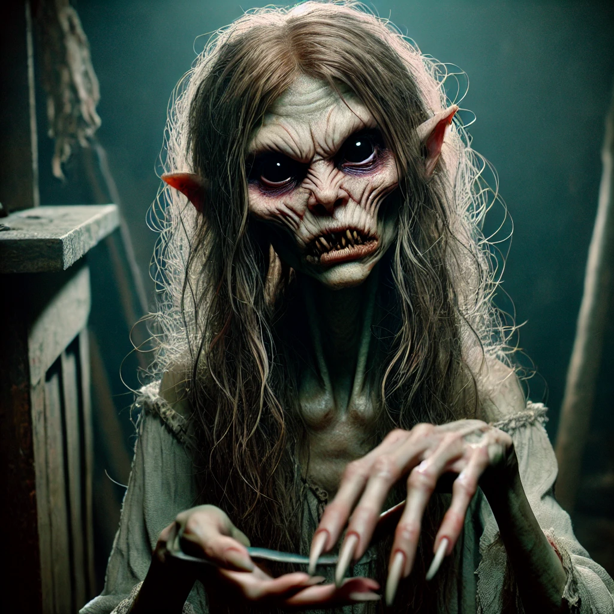
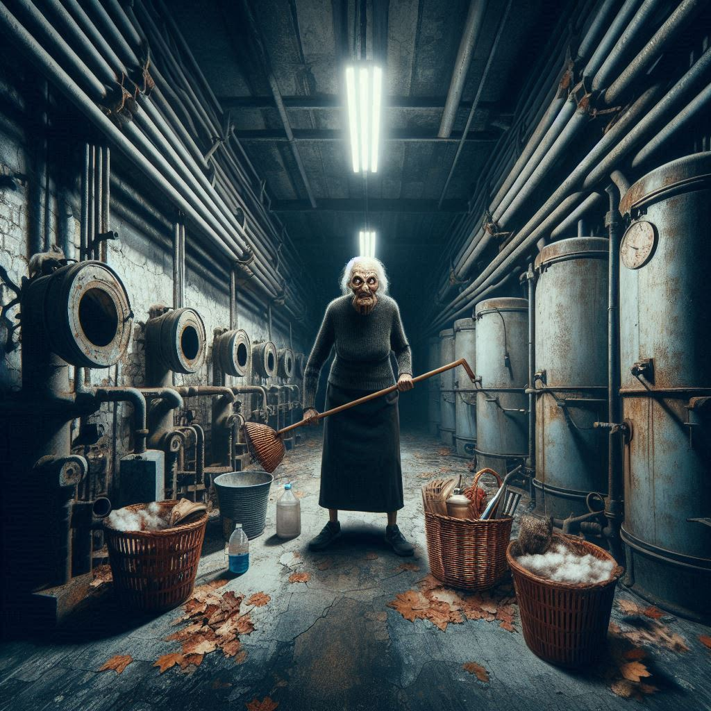
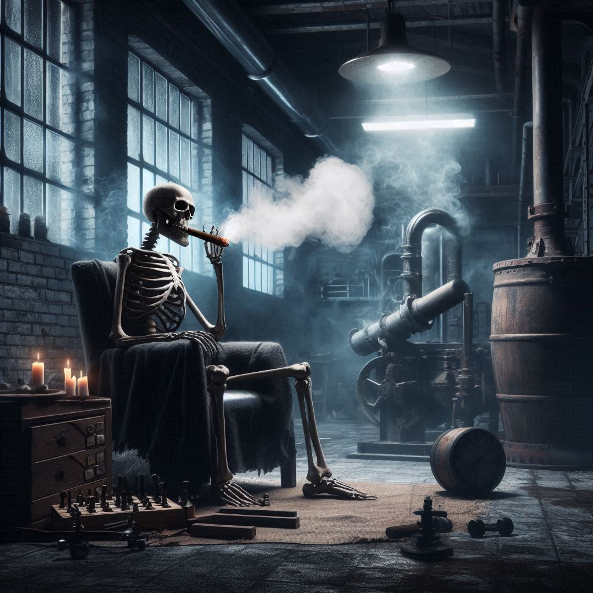
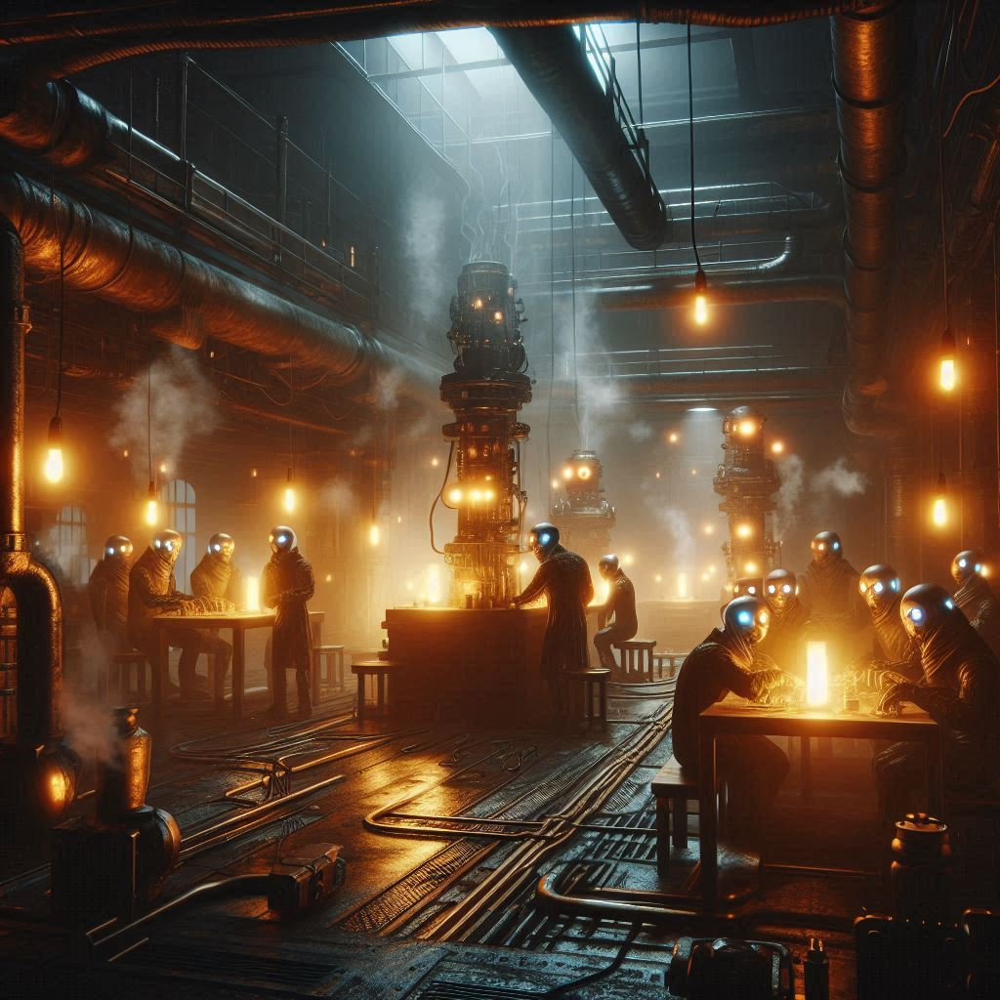
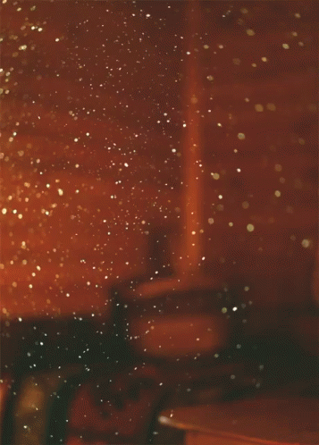
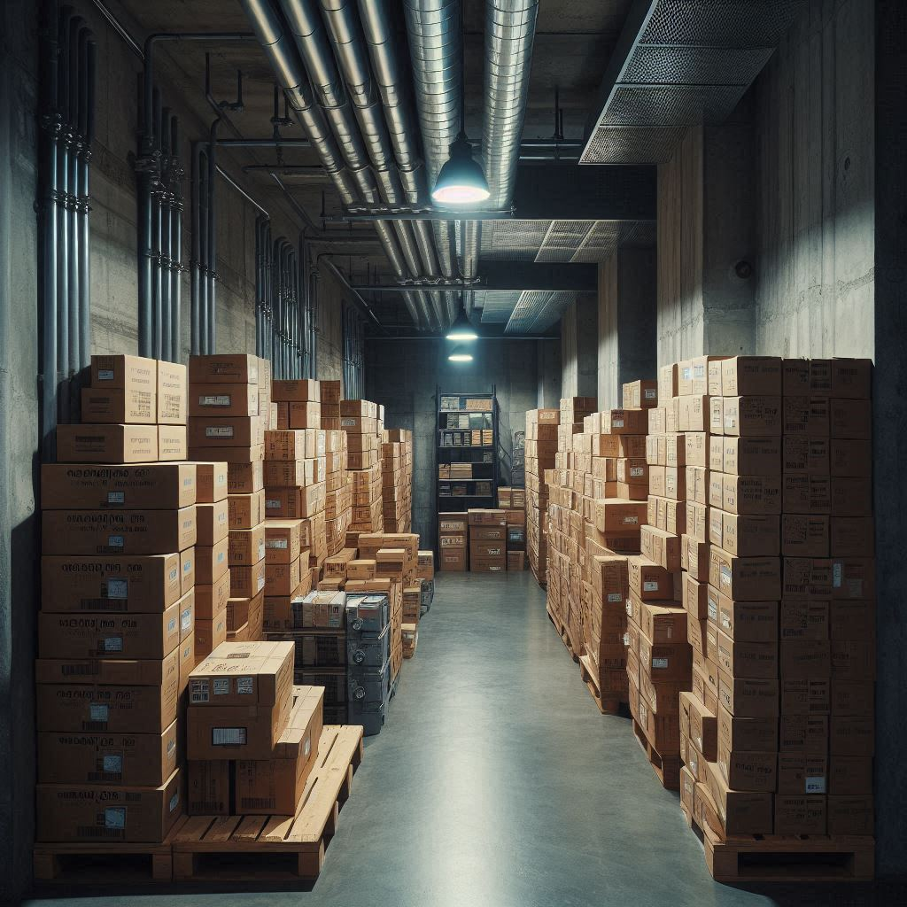
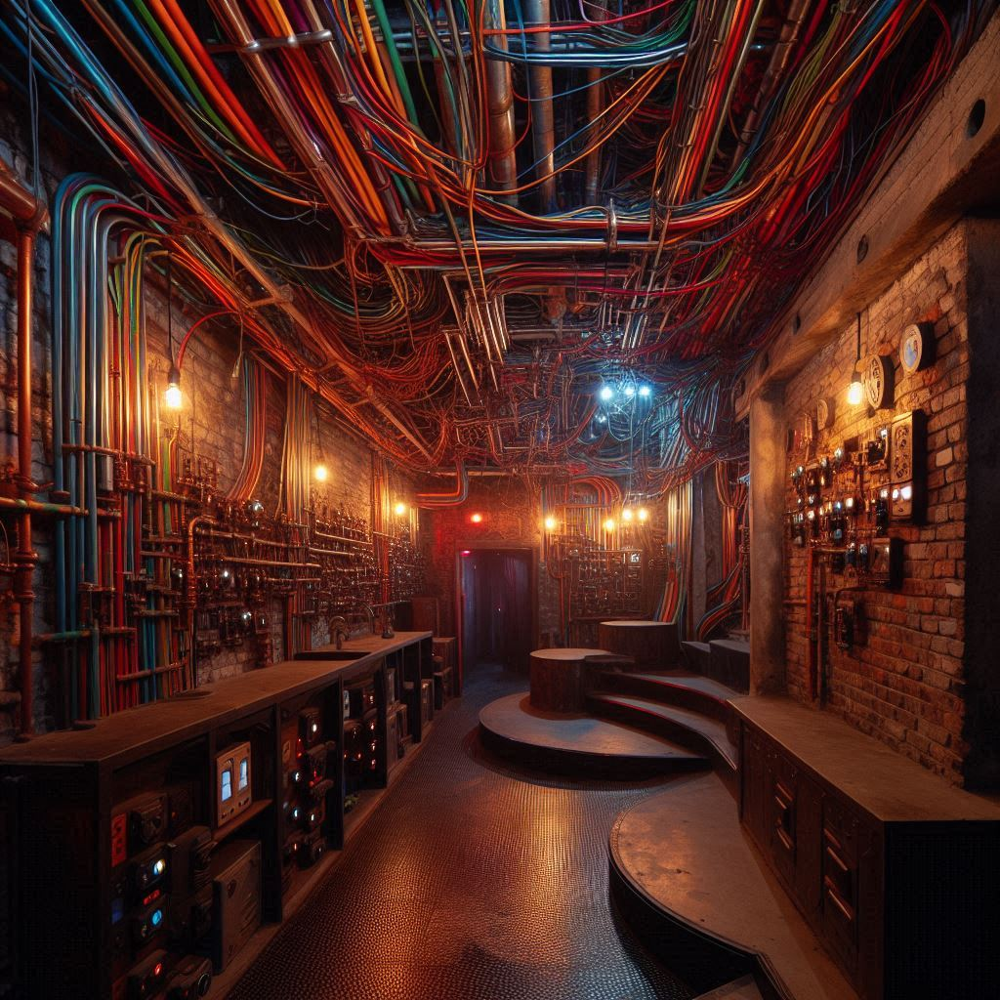
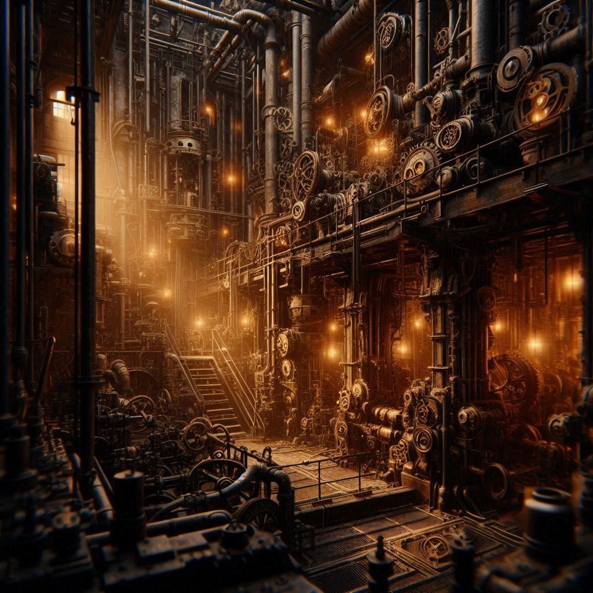
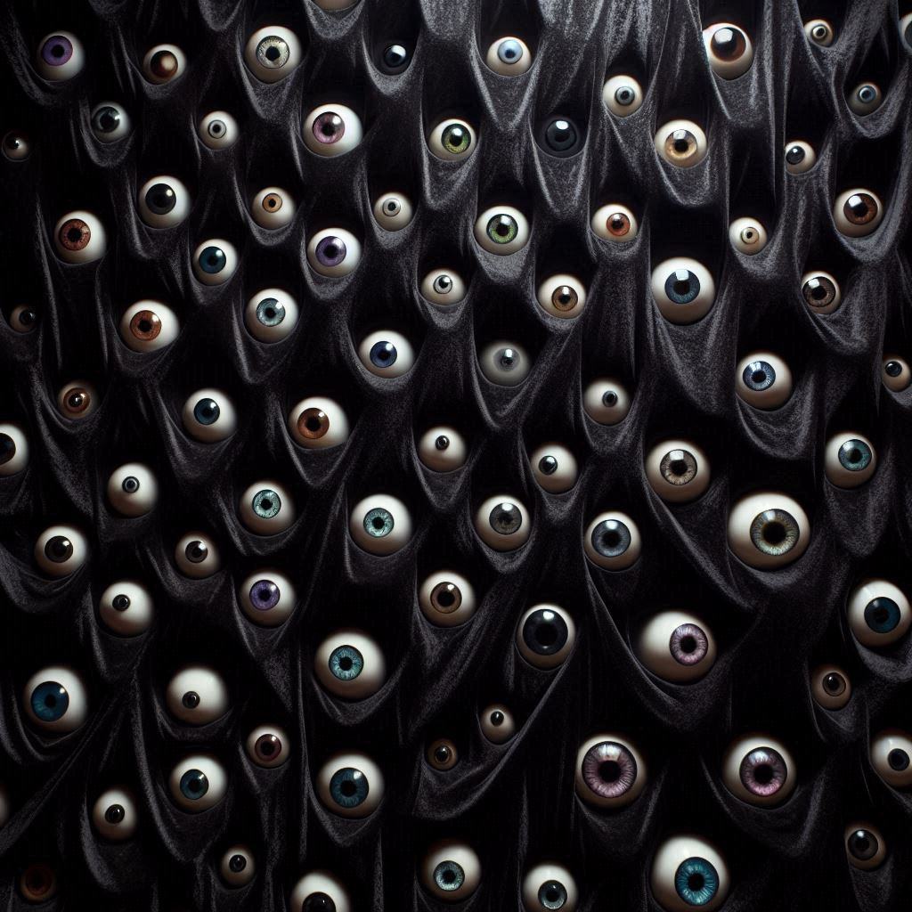

A fábrica do macho
Guia de informações para a sobrevivência dentro da fábrica.
O que é a fábrica?
A fábrica de longe é um dos lugares mais complexos de serem compreendidos. O que se sabe até então é que existem duas fábricas, uma fora da Goya, e outra dentro da Goya, ambas possivelmente são conectadas entre sí.
Como o objetivo desta página é listar e registrar os acontecimentos sobre a Goya, os assuntos abordados acerca da fábrica se referem apenas a fábrica dentro da Goya.
Como encontrar a fábrica?
Andando pelas ruas da Goya você pode se deparar com um homem grande com a aparência deveras grotesca, o macho, uma vez avistado, ele virá até você e te pedirá que o ajude com algumas coisas em sua fábrica, se você quer evitar problemas, Recuse, não recuse a menos que esteja disposto a ser morto se você aceitar, o macho te levará até a fábrica.
personalidades relacionadas
O macho
O Macho é uma figura enigmática; sua presença é reverenciada e temida por todos. Ele se veste sempre com uma camisa social. Há rumores de que ele possui habilidades sobrenaturais, capazes de manipular o tempo e a percepção. Os trabalhadores que ousam desafiar suas ordens frequentemente desaparecem ou retornam lobotmizados com histórias de visões aterrorizantes e de realidades distorcidas, como se a fábrica fosse uma porta para outra dimensão.

Rogério
É apenas mais um dos funcionários que caíram nas mãos do macho, sua função era fazer reparos na fábrica, mas o gesso estranho que o macho lhe forneceu acabou o afetando de uma forma inesperada.
Larissão
Um dos mais perigosos seres que você pode acabar encontrando se pisar na fábrica. Larissão tem origens desconhecidas, mas seu envolvimento com o macho é diferente. Larrisão pode transfigurar-se em muitas coisas, mas sua preferência é uma mulher, porém sua transformação não é perfeita, pode notar-se um odor estranho nas redondezas quando ele está por perto. Não, nunca, jamais aceite uma proposta do Larissão, se você tem amor por sua vida e pela sua sanidade mental.
Dona Dadá
Das mãos do macho nenhuma forma de vida passa desapercebida, e dona Dadá é prova disso. Sendo uma idosa de origem humilde, dona Dadá necessitava de dinheiro, foi aí que o macho fez mais uma vítima.
Dona Dadá trabalha na fábrica incessantemente, e o pó do gesso que Rogério usa para trabalhar faz mal a ela, ocasionando em tosses indesejadas.
fresca
Um dos piores funcionários que se pode encontrar, a fresca é uma criatura que já foi totalmente corrompida pela fábrica do macho.
Se encontrar com ela pode ser um problema, já que ela vai te pedir comida em troca de sua vida. O maior desafio é agrada-la, pois é extremamente exigente com a comida.
veia do gemidão
Essa estranha criatura é chamada assim pois é vista frequentemente falando coisas sem sentido como a morte de seu cachorro, que morreu após ouvir um tal de "gemidão do zap".
Se avistá-la, saia de perto o mais rápido possivel. Garanta que ela não te veja, caso contrário você ouvirá lamúrias até enlouquecer.
Aquiles
Aquiles, como foi conhecido, permaneceu inalterado em sua essência mesmo após a lobotomização; a preguiça ainda dominava seu corpo, assim como seu vício incontrolável por fumar. Suas atitudes incomodaram o Macho, que decidiu se livrar dele.
Apesar de ter sido avistado apenas uma vez, seu nome ressoa como um alerta, lembrando a todos os que o conhecem das consequências de sua indolência e hábitos prejudiciais.
dona natalia
Alguns afirmam que ela é a verdadeira proprietária do galpão onde se ergue a fábrica do Macho. Dona Natália, junto com Larissão, são as raras personalidades capazes de influenciar o comportamento do Macho. Responsável por alimentar os funcionários, dona Natália é uma figura central na fábrica e, sem dúvida, carrega consigo as histórias mais pesadas que cercam aquele lugar enigmático.
PC
Certamente, é uma das aparições mais estranhas que se encontram na goya. Na fábrica do Macho, o PC costuma surgir nas salas onde há telas, manifestando-se nelas apenas para observar. Ninguém sabe ao certo o que ele deseja, e, até agora, nenhuma conexão entre ele e o Macho foi comprovada.
Mistérios acerca da fábrica
Aqui estão listados os casos em que coisas inconclusivas foram relatadas. Alguns possuem detalhes e informações abundantes, porém duvidosas, enquanto outros podem relatar fatos nada concretos.
as sombras
As sombras são figuras humanoides que trabalham e vagam pela fábrica, frequentemente avistadas nos corredores e salas mais escuras. Supõe-se que elas sejam o estágio final daqueles que foram afetados pelo pó, embora essa hipótese ainda careça de confirmação. Sua presença é um mistério, e aqueles que as encontram raramente saem ilesos, tanto física quanto mentalmente.
o pó
O pó, com certeza, é um dos maiores enigmas da fábrica, pois sua origem é desconhecida. Contato prolongado pode ser prejudicial, causando feridas, irritações na pele, perda de sanidade, mudanças nos olhos e sentidos alterados.
A eminência nas sombras
No coração da fábrica, a Eminência nas Sombras se destaca entre as figuras humanoides. Ao contrário das outras, ela preservou a lucidez e observa as almas atormentadas com compaixão.
Diz-se que, afetada pelo pó desde o início, a Eminência desenvolveu uma missão: eliminar as sombras, não por maldade, mas como um ato de misericórdia. Para ela, a existência nesse estado é uma condenação insuportável.
Silenciosamente, ela se infiltra entre elas, buscando libertá-las de sua prisão sombria. Sua presença é um presságio, recomenda-se não tentar contato.
as salas
A fábrica possui inúmeras salas, muitas delas são perigosas e não existem informações disponiveis. Abaixo há algumas das salas que foram registradas:
sala das caixas
A Sala das Caixas é um espaço labiríntico, repleto de contêineres de todos os tamanhos. Algumas caixas estão empilhadas até o teto, enquanto outras estão abertas, revelando conteúdos estranhos e perigosos. Este é o local onde os fragmentos de produtos experimentais são armazenados, e o toque inadvertido a um desses itens pode desencadear consequências imprevisíveis.
sala dos fios
Na Sala dos Fios, uma teia complexa de cabos e fios pendura-se do teto como serpentes indomáveis. É um lugar de conexões e desastres potenciais, onde cada fio tem um propósito, mas também uma história de falhas e acidentes. O zumbido constante de eletricidade permeia o ar, e o cheiro de metal e ozônio é intenso. Aqui, é recomendado ter cuidado dobrado, pois um fio desencapado pode resultar em choques e falhas catastróficas.
sala das máquinas
A Sala das Máquinas é um ambiente repleto de engrenagens e dispositivos barulhentos, todos trabalhando incessantemente. O som do metal se chocando e o cheiro de óleo dominam o espaço. Esta é a espinha dorsal da fábrica, onde a produção acontece em ritmo frenético. As máquinas parecem ter vontade própria, movendo-se com uma precisão assustadora. No entanto, por trás de sua eficiência, há um ar de tensão; um erro aqui pode ter consequências graves, recomenda-se não por a mão nas máquinas, pois pode resultar em desmembramentos.
A sala escura
A sala escura é um dos lugares mais perturbadores da fábrica. Ao cruzar a porta, a atmosfera muda imediatamente; um silêncio opressivo envolve o ambiente, e dezenas de olhos brilhantes surgem das sombras, que começam a sussurar e murmurar com sons de agonia enquanto observando cada movimento.
Essas sombras, que perderam sua forma humanóide não estão ali por vontade própria, mas presas, aprisionadas para reeducação.
Dizem que esse é um local onde as sombras são mantidas à força, aguardando o retorno do macho reprogramação para que voltem ao trabalho na fábrica. O medo e a desolação permeiam o ar, tornando cada respiração uma luta contra a vontade de fugir. A sensação de estar sob o olhar atento das sombras é sufocante, e a maioria dos intrusos sente uma necessidade urgente de sair dali, recomendando que quem entrar o faça o mais rápido possível.